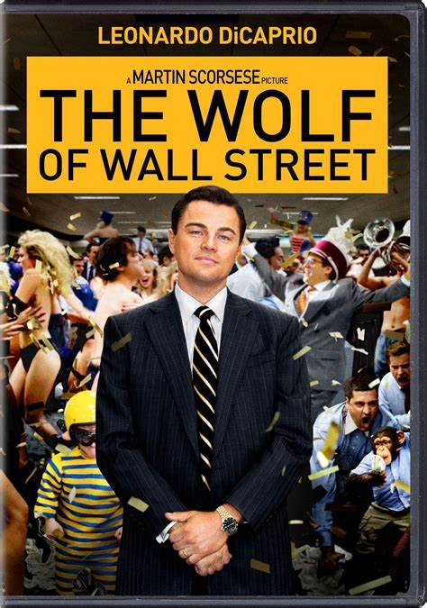

Movie 2
The Wolf of Wall Street
Rating: 8.2/10
Synopsis
Jordan Belfort, a Wall Street stockbroker, is a successful businessman who becomes the "Wolf of Wall Street" after his firm, Stratton Oakmont, is discovered by FBI Agent Patrick Denham. Belfort's company, which he calls Stratton Oakmont, is a pump and dump scam, with a reputation for high commissions. He befriends salesman Donnie Azoff and they start a lavish lifestyle, using prostitutes and drugs. The FBI intensifies the investigation, and Jordan makes $22 million on the IPO of Steve Madden Ltd. To hide his money, Jordan opens a Swiss bank account with the corrupt banker Jean-Jacques Saurel in the name of Naomi's aunt Emma. They use friends with European passports to smuggle cash to Switzerland. When Donnie gets into a public fight with Brad Bodnick, their scheme is nearly exposed. Donnie offers Jordan a powerful brand of Quaaludes to help him cope with the bad news. However, when Donnie is arrested, Jordan fights him to save Donnie's life. With the shadow of law enforcement over them, Jordan decides to stay on Stratton Oakmont. Jordan, Donnie, and their wives sail to Monaco to settle their bank account, but a violent storm capsizes their yacht. After being arrested, Jordan agrees to gather evidence on his colleagues in exchange for leniency. After one last bout of sex, Naomi tells Jordan she will divorce him and wants full custody of their children. Jordan wears a wire to work and slips a note warning him about it, leading to Agent Denham arresting him for breaching his cooperation deal. Despite this, Jordan receives a reduced sentence and is sentenced to 36 months in a minimum security prison in Nevada.